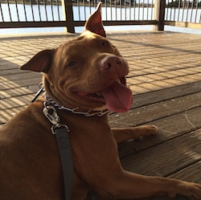

Dev Bootcamp
Boston is a 6 year old American Pit Bull mix. She has been living at the Berkeley Animal Care Services Shelter for about 4 months. I have been working with her every week to help make her the stand out at the shelter, so that she can find a new owner.
Boston is the most loving dog I have ever met. She is eager to please humans. There is no place she'd rather be than in your lap gazing up at you with her huge smile.
She knows basic commands and is housebroken. She can get a little skiddish around other dogs, but I have been working with her on this too, and she has made vast improvement. Adopting her would also entitle the owner to bring her to the BadRap obedience classes for free. Currently, I bring her weekly where she is doing very well.
If my lease allowed it, I would adopt her in an instant! If you are interested in learning more about her contact me at cgardens.dev@gmail.com or Berkeley Animal Care Services at (510) 981-6600.

Boston is the most loving dog I have ever met. She is eager to please humans. There is no place she'd rather be than in your lap gazing up at you with her huge smile.
She knows basic commands and is housebroken. She can get a little skiddish around other dogs, but I have been working with her on this too, and she has made vast improvement. Adopting her would also entitle the owner to bring her to the BadRap obedience classes for free. Currently, I bring her weekly where she is doing very well.
If my lease allowed it, I would adopt her in an instant! If you are interested in learning more about her contact me at cgardens.dev@gmail.com or Berkeley Animal Care Services at (510) 981-6600.